Fold it, don’t just watch it.
Origami Learn simulates the paper. Drag a fold half-way and hold it there, turn the sheet over, see which layer moves, replay the step as many times as you need. When a diagram in a book leaves you stuck, this is what unsticks you.
148 models · 122 of them free · no ads, no tracking, no account
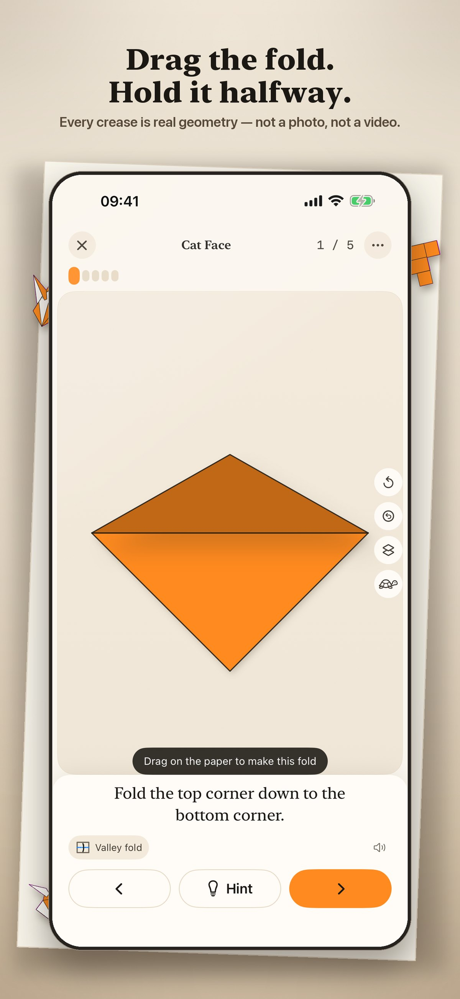
Every model is drawn live
Not a photo and not a video. The paper is simulated by a fold engine, so every step is something you can take apart.
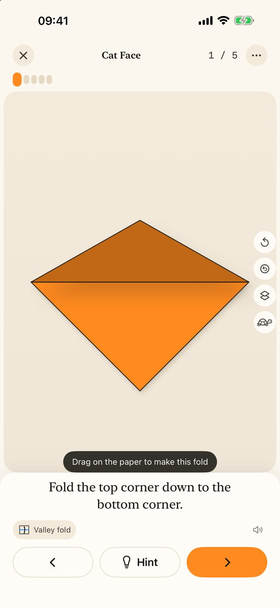
Scrub through a crease
Drag on the paper and the fold follows your finger. Stop half-way and the flap stays there, lit and shadowed, so you can see exactly which layer is moving and where it is going.
Arrows that mean something
Solid heads for valley folds, hollow for mountain, double-ended for fold and unfold — the same language an origami book uses, so the diagrams in your books start making sense too.
Turn it over, look underneath
Flip the sheet at any step, or fade the covering layers to see what is hiding beneath them.
A path, not a pile
Nine chapters from “what is a valley fold” to bird bases, reverse folds and open-and-pull. Twelve lessons, seven practice sets, each one unlocking the models that use it.
Hands full? Just talk
Say “next”, “back” or “again”. Recognised entirely on your device — no audio ever leaves it — so you never put the paper down.
Bring it to life
Give a finished model eyes, a nose and whiskers from thirty-six stickers in any colour, or draw on it freehand. Print it, share it, or save a flapping bird as a looping GIF.
Your paper, your colours
Set both sides of the sheet, per model or everywhere, including a colour-blind-safe pair told apart by lightness rather than hue.
Kirigami and modulars
Twenty-three fold-and-cut designs and nine modular pieces built from folded units, alongside one hundred and sixteen classic origami models.
Snowflake Studio
Draw your own cuts on a folded wedge and watch them mirror all the way round. Print true-size squares and grids from Paper Tools.
Built to be read
Full VoiceOver in the player, Dynamic Type, Reduce Motion that swaps animation for clear before-and-after states, AA contrast, and Kids Mode.
One hundred and forty-eight models
Every one a genuine traditional design, with the region it comes from and the paper it wants. Each shape below is drawn by the app’s own fold engine.
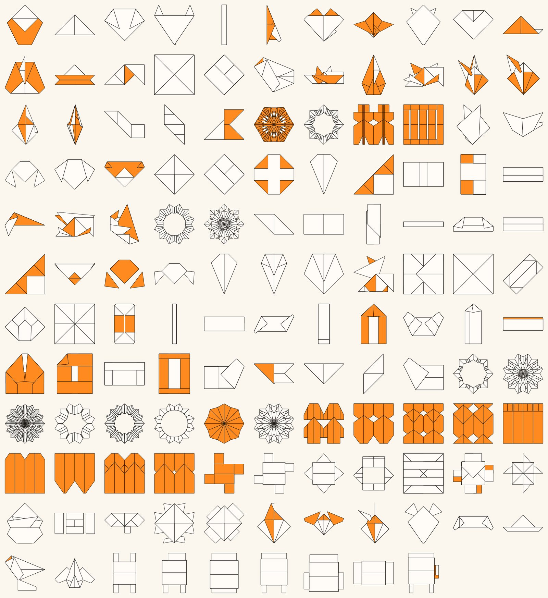
On every screen you own
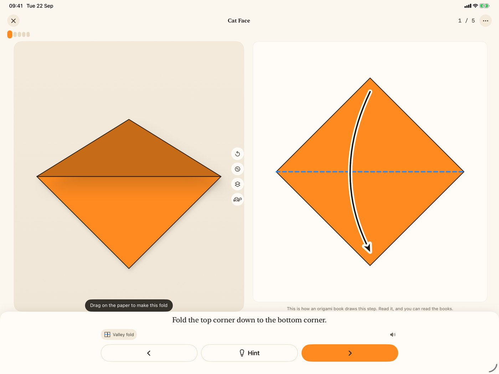
iPad shows both at once
The live fold on one side, the book-style diagram on the other, with the glossary a tap away. A real iPad layout, not a stretched phone.
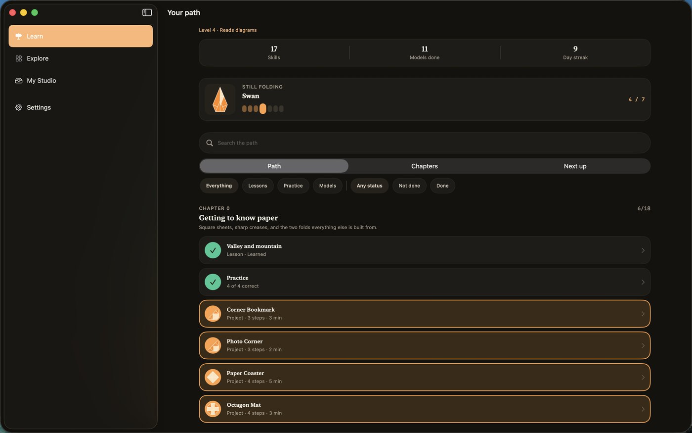
And a real Mac app
Not a phone app in a window: a menu bar with a shortcut for every action in the player, the glossary in its own window beside it, and printing through the Mac’s own print dialog.
The Digital Crown is the fold scrubber
Your hands are holding paper, so turn the crown with the finger already pinching the crease. The ring fills as the fold closes, the watch taps when it lands, and the step moves on by itself. A whole model without looking at the screen.
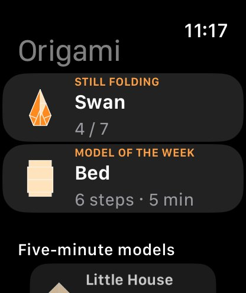
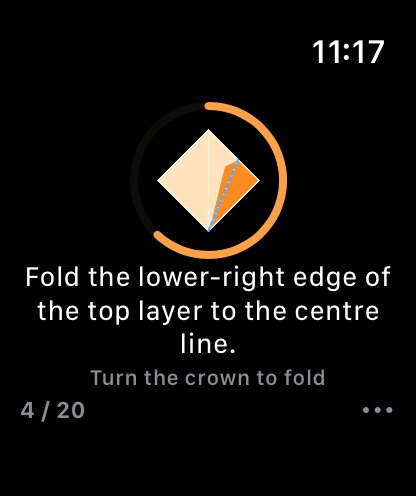
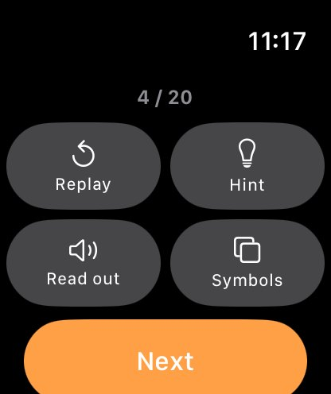
A closer look
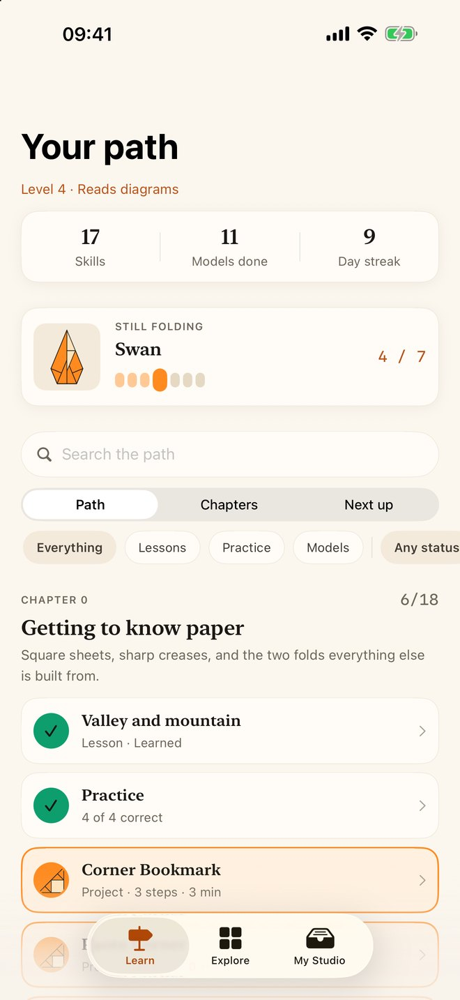
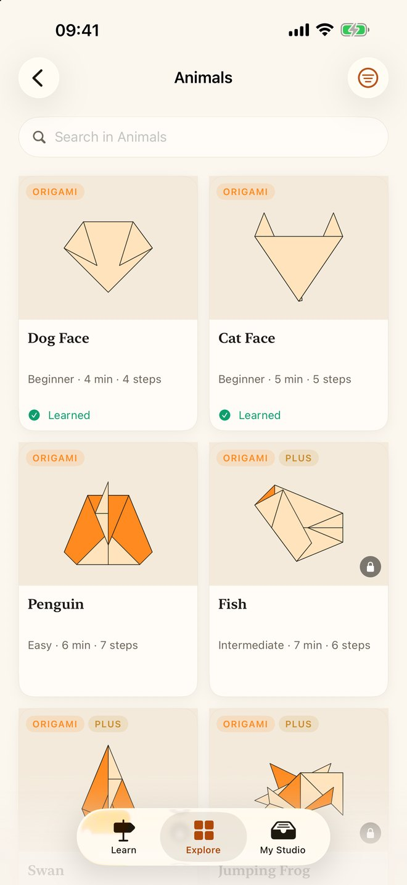
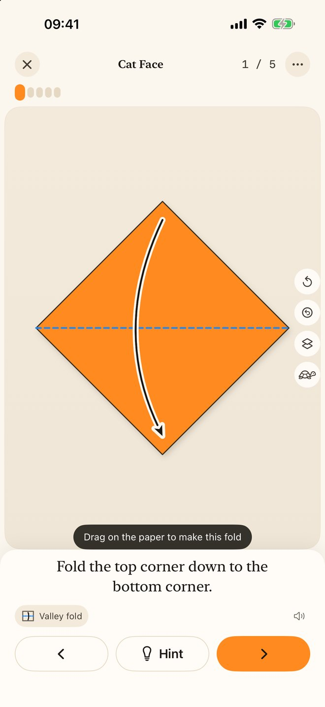
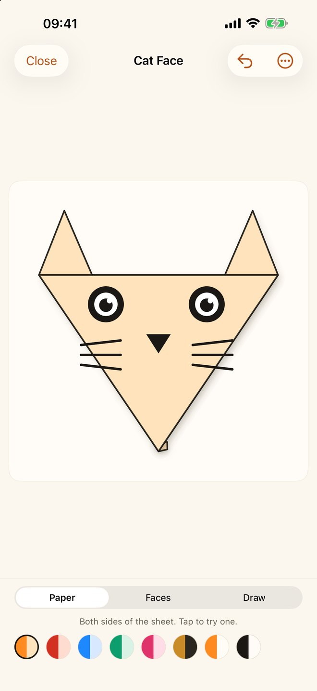
Free to fold. Plus if you want the rest.
122 of the 148 models are free forever, and hints, symbols and the glossary are never locked. Plus opens the remaining 26 and the full learning path.
Prices shown are US dollars; the App Store charges in your own currency. Subscriptions renew until cancelled in your Apple Account settings. Family Sharing is on for Yearly and Lifetime.
No ads. No tracking. No account.
There is nothing to sign up for and nothing to collect. No analytics, no advertising, no third-party SDKs. Your progress and your photos stay on your device, and the whole library works offline.
Read the privacy policySupport
Write to info@orlproducts.com. A person reads it, usually within two working days. Say which device you are on and, if something went wrong, which model you were folding.
A model is locked. What do I get for free?
122 of the 148 models, every hint, every symbol and the whole glossary — forever. The first three steps of any paid model are free to try, and the progress you make in them is kept.
I paid but nothing unlocked.
Open any paywall and tap Restore Purchase. Purchases are tied to your Apple Account, so use the same one you bought with. If it still does not appear, write to us with the date of purchase.
How do I cancel a subscription?
Subscriptions are managed by Apple, not by us: Settings → your name → Subscriptions, or tap Manage subscription in the app’s Settings. Cancel at least a day before the period ends. Lifetime never renews.
Voice steps are not working.
Turn on Hands-free steps in Settings → Sound; that switch is what asks for the microphone. Recognition runs entirely on your device, so a device that cannot recognise your language on-device will decline rather than send your voice anywhere. The buttons and swipes always work.
How does the Apple Watch app work?
It installs with the iPhone app. It controls the player — you choose models on the phone. Rotate the Digital Crown to close a fold. Progress syncs both ways whenever both apps are open, and is queued when they are not.
Does it work offline?
Entirely. Every model, lesson and diagram is in the app. The only thing that needs a network is buying or restoring Plus.
Which languages?
English, Tiếng Việt, 日本語, Español and 简体中文 — names, steps, tips, lessons and glossary, all of it. Switch in Settings and the whole app reloads in the new language.